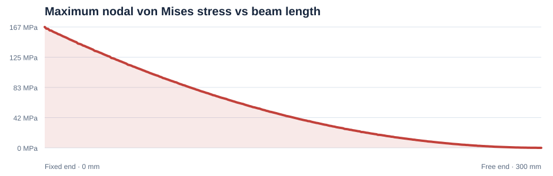
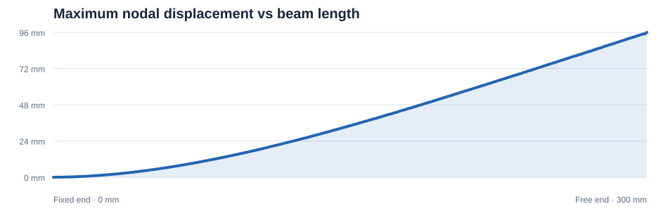
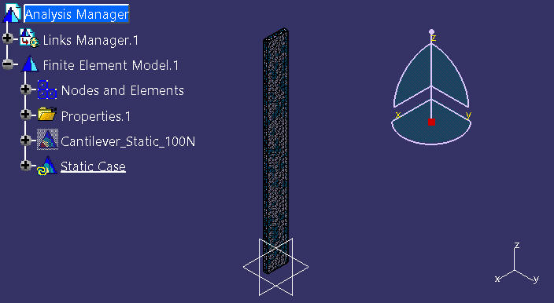

This report summarizes solver exports from CATIA V5 Generative Structural Analysis (GSA). The component, mesh, material, restraint, pressure load and static solution are stored in the linked CATIA files.
83.41 MPamax von Mises · 100 N
166.82 MPamax von Mises · 200 N
48.10 mmmax displacement · 100 N
96.19 mmmax displacement · 200 N
Review required: CATIA’s displacement exports are 48.10 mm and 96.19 mm. A simple Euler–Bernoulli hand check for the stated geometry/material gives approximately 3.13 mm and 6.25 mm. The large mismatch must be resolved before treating displacement or safety conclusions as design-validated.
Model and setup
| Item | Definition |
|---|---|
| Component | Rectangular cantilever beam, 300 mm long, 30 mm wide, 6 mm thick |
| Material | CATIA material catalog Metal / Steel; E = 200 GPa, ν = 0.266, density = 7,860 kg/m³ |
| Mesh | 3D solid tetrahedral octree mesh, target size 5 mm |
| Boundary condition | Clamp applied to the end face at z = 0 mm |
| Load | Uniform pressure on the 300 × 30 mm top face: 0.011111 MPa (100 N) and 0.022222 MPa (200 N) |
| Solution | Linear static GSA solve; CATIA Compute returned success for both loads |
Stress distribution · 200 N case

Displacement distribution · 200 N case

Results and factor of safety
| Load case | Peak von Mises | Peak displacement | Estimated FoS* |
|---|---|---|---|
| 100 N | 83.41 MPa | 48.10 mm | 3.00 |
| 200 N | 166.82 MPa | 96.19 mm | 1.50 |
* Factor of safety is estimated as assumed yield strength / CATIA peak von Mises stress, using 250 MPa as an explicit reference assumption. The solver output does not establish this yield value; confirm the exact steel grade before using the FoS.
Observations
- Peak stress is concentrated at the clamped root, as expected for a cantilever under distributed transverse loading.
- Doubling the load approximately doubles both exported peak stress and displacement.
- Stress-based FoS is about 3.00 at 100 N and 1.50 at 200 N under the stated yield assumption.
- Displacement does not agree with the elementary beam check; verify the analysis model’s units, support definition, load magnitude and result component in CATIA before submission as a validated design.
CATIA evidence and files
